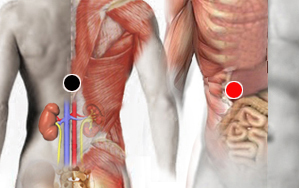

Altivez
Pares
suprarrenal - hígado
cisura media - C. media
cisura Rolando - C. Rolando
mastoides - hipófisis
párpado - riñón

Generalidades
Es un par de tipo emocional. La altivez o soberbia es una precepción de superioridad con respecto a las demás personas que provoca conductas distantes y despectivas. Sinónimos: arrogancia, orgullo.